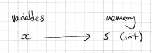
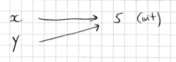
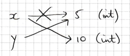
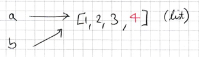
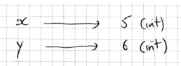

Concepts
Contents
1. Concepts#
1.1. Types#
Every variable has a value and a type which are specified at the moment of variable creation. Some common Python types are given below. It is important to know - and keep track of - the types of the variables you create since a variable’s behaviour is determined by its type.
Data type |
Description |
Example |
Mutability |
|---|---|---|---|
|
Integer (whole number) |
|
immutable |
|
Floating-point number (fractional number) |
|
immutable |
|
String (sequence of characters) |
|
immutable |
|
Boolean (true or false value) |
|
immutable |
|
Heterogenous collection of values |
|
mutable |
|
Homogeneous collection of numerical values |
|
mutable |
Python distinguishes between mutable and immutable types. This is an important distinction which we will study further later.
Use the built-in Python function type to determine the type of a variable:
x = 5
type(x)
int
x = [5]
type(x)
list
1.1.1. Immutable Types#
An immutable type is a type whose value cannot be changed. Immutable types include numerical types (integers and floats) as well as strings and Booleans (true/false values). Python has specific syntax for creating these types:
Characters surrounded by quote marks
"or'result in a string;numbers icluding a decimal point or is expressed in scientific notation result in a float (64-bit approximation to real numbers):
numbers without a decimal point result in an integer:
the keywords
TrueandFalseare the only possible Boolean values.
x = "5"
type(x)
str
x = 5.5
type(x)
float
x = 5e10
type(x)
float
Note that if a decimal point is included, Python will always create a float rather than an integer. So 5. and 5.0 are floats whereas 5 is an integer.
x = 5
type(x)
int
x = 5.
type(x)
float
1.1.2. Expressions#
A Python expression is a combination of values and operators that evaluates to a single value. For example 5 + 6 is an expression which evaluates to the number 11. Python has in-built (and somewhat complicated) rules for determining the type of the resulting value. In general
if any of the values in an expression is a float, the result is a float;
if the expression contains only integers, the result is an integer when adding, subtracting or multiplying (
+,-,*) but a float when dividing (/).
# adding two integers results in an integer
x = 5 + 6
type(x)
int
# adding a float to a float results in a float
x = 5.0 + 6.0
type(x)
float
# adding a float to an integer results in a float
x = 5.0 + 6
type(x)
float
Take special care when dividing. Using / to Divide two integers always results in a float, even if the result is a whole number:
x = 6 / 3
type(x)
float
If you would like the result to be an integer use the integer division operator //:
x = 6 // 3
type(x)
int
In some cases, the operation performed by a particular symbol depends on the types within the expression of the object. For example x + y performs string concatentation if x and y are strings, whereas it performs addition if they are integers or floats.
x = "5"
y = "6"
x + y
'56'
x = 5
y = 6
x + y
11
Depending on the type of x and y, it may not be possible to evaluate x + y, resulting in an error:
x = 5
y = "6"
x + y
---------------------------------------------------------------------------
TypeError Traceback (most recent call last)
Cell In[15], line 3
1 x = 5
2 y = "6"
----> 3 x + y
TypeError: unsupported operand type(s) for +: 'int' and 'str'
In general, Python does a good job of implicitly converting between float and int types, meaning that we can flexibly combine them in expressions. However, one important exception is when working with arrays or lists. Array and list indexes must always be of integer type.
a = [1, 2, 3]
a[0]
1
a[0.0]
---------------------------------------------------------------------------
TypeError Traceback (most recent call last)
~\AppData\Local\Temp\ipykernel_16696\3734301883.py in <module>
----> 1 a[0.0]
TypeError: list indices must be integers or slices, not float
1.1.3. Mutable Types#
A mutable type is a type whose value can be changed. Examples of mutable types are lists and arrays. These are ‘container’ data types which can contain other values.
list is a built-in Python type and there is specific syntax for creating them using square brackets [ and ].
x = [1, 2, 3, 4, 5]
print(z)
[0, 1, 2, 1]
An array is type belonging to the Numpy library, and therefore we must import numpy before we can create an array. Because numpy.array is not a built-in Python type, we we can only create an array by calling numpy functions. For example, the function numpy.array takes a Python list and returns an equivalent Numpy array.
import numpy as np
x = [1, 2, 3, 4, 5]
a = np.array(x)
print(x)
print(a)
[1, 2, 3, 4, 5]
[1 2 3 4 5]
Notice the subtle difference in how Python prints the list (with commas) vs the array (without commas).
Even though arrays and lists are in many ways quite similar - containers for a sequence of data, accessed with square bracket notation - it is important to be aware of their differences. For example, arrays have an attribute shape which returns the dimensions of the array, whereas lists do not (see object syntax below).
print(a.shape)
print(x.shape)
(5,)
---------------------------------------------------------------------------
AttributeError Traceback (most recent call last)
~\AppData\Local\Temp\ipykernel_16696\566023164.py in <module>
1 print(a.shape)
----> 2 print(x.shape)
AttributeError: 'list' object has no attribute 'shape'
Similarly, the * operation has a completely different effect on arrays vs lists:
print(a * 5) # multplies each element of the array by 5
print(x * 5) # contatentates 5 copies of the list
[ 5 10 15 20 25]
[1, 2, 3, 4, 5, 1, 2, 3, 4, 5, 1, 2, 3, 4, 5, 1, 2, 3, 4, 5, 1, 2, 3, 4, 5]
Dot Notation
We use special notation called dot notation to access attributes and methods specific to the type of a variable. For example, variables of string type have a method split which returns a list of strings:
x = "Natural Sciences"
a = x.split()
print(a)
['Natural', 'Sciences']
1.1.4. Type Conversion#
Sometimes we need to force Python to convert a value from one type to another. Use the Python functions str, int and float to convert a value to a string, integer and floating-point number respectively.
For example, 5.0 is float. To convert it to an integer, use the function int:
x = 5.0
type(x)
float
y = int(x)
type(y)
int
Exercise 1.1
1. What is the type of each of the variables x, y, z, w and u?
import numpy as np
x = 5
y = 1e6
z = [10, 20]
w = "5"
u = np.array(z)
2.Without using Python, predict the value and type of the following expressions. Then use the using the Python console to check your answers.
x / xx // xz[x / x]w * 10z * 10z * 10.u * 10y + wu * z
3. For the expressions that result in an error, find a sensible way to fix the error.
1.2. Object References#
1.2.1. Variable Assignment#
[See also https://nedbatchelder.com/text/names.html]
We use the assigment operator = to assign a value (on the right-hand side) and to a variable (on the left-hand side).
Consider what happens when we create a new variable x and assign it the value 5.
x = 5
Python performs the following steps:
Stores the value
5(of data typeint) in the computer’s memory;Creates a variable with name
xwhich refers to the the value5.
The best way to visualise Python variables is as a ledger with variable names on the left, objects (with associated type) on the right, and arrows between them.

Attention
It is important to understand that the assignment operator = is not like ‘equality’ in mathematics. Python has another operator == which tests for equality.
The Python assignment operator = first evaluates the expression on the right, and then assigns it to the variable on the left. The following is nonsense and will result in an error:
5 = x # error!
1.2.2. Mutable vs Immutable Types#
Suppose we execute the following two lines of code.
x = 5
y = x
Python stores the value
5(int) and then assigns a new variable namedxto it.Python assigns a new variable named
yto the value referred to by variablex.

Note that x and y refer to the same value 5.
Reassigning either of the variables x or y unlinks them so that they no longer point to the same object:
x = 5
y = x
x = 10
Python stores the value
5(int) and then assigns a new variable namedxto it.Python assigns a new variable named
yto the value referred to by variablex.Python stores the value
10(int) and assigns the variable namedxto it.

Things get more interesting when we have a mutable type such as a list:
a = [1, 2, 3]
If we assign another variable to the list, we’ll have two variables referring to the same list:
a = [1, 2, 3]
b = a

We now have a single list, referred to by two variables.
If we change the value of the list, the change affects all variables assigned to it.
a = [1, 2, 3]
b = a
a.append(4)
print(a)
[1, 2, 3, 4]
print(b)
[1, 2, 3, 4]

Summary
Assignment never makes a copy of an object
Mutating the value of an object changes the value of all variables assigned to it
Only mutable objects can be changed. Objects of type
int,string,floatandboolare immutable, whereas most other types (includinglistandnumpy.array) are mutable.
Recall that integers are immutable. This means that even though two variables refer to the same object,
x = 5
y = x
y = y + 1
In the first line, Python creates an object
5and assigns the variable namedxto it.In the second line, Python assigns the variable
yto the object referred to by the variablex.In the third line, Python evaluates the expression
y + 1, stores the result in a new object and (re)assigns the variableyto it.

Exercise 1.2
What are the values of x and y after each executing each of the following?
Try to answer them by sketching diagrams as above. Then, check your answer using the Python console.
1.
x = 1
y = x
x += 5
(a += b is Python shorthand for a = a + b)
2.
x = [1, 2]
y = x
x[0] = 10
3.
x = [1, 2, 3, 4]
y = x[0]
x[0] = 5
4.
x = 5
y = [x, 2, 3]
y[0] = 1
1.3. Functions#
In Python, a function is a block of code defined with a name. We use functions whenever we need to perform the same task multiple times without writing the same code again. A function can take arguments and return a value.
In the example below, add_one is a function with a single argument x.
def add_one(x):
result = x + 1
return result
z = 5
w = add_one(z)
print(z, w)
5 6
1.3.1. Variable Scope#
The scope of a variable refers to the context in which that variable is visible/accessible to the Python interpreter.
In the example above, the following variables have local scope since they are accessible only within the function add_one. These local variables exist from the point they are created until the function exits.
x
result
The following variables have global scope since they are accessible throughout the code file. These global variables exits from the point they are created until the Python program terminates.
z
w
Any attempt to access a local variable outside the scope of its function will result in a ‘name not defined’ error.
def add_one(x):
result = x + 1
return result
z = 5
w = add_one(z)
print(result)
---------------------------------------------------------------------------
NameError Traceback (most recent call last)
~\AppData\Local\Temp\ipykernel_16696\4020751027.py in <module>
6 w = add_one(z)
7
----> 8 print(result)
NameError: name 'result' is not defined
Variable Shadowing
Function arguments are always local variables. In the case that the function argument has the same name as a global variable, we end up with two variables with the same name, one of global scope and one of local scope.
In the example below, the line x = 5 creates a global variable called x and assigns it the value 5. Then, inside the function a second variable with the same name x is created. The line x = x + 1 is inside the function, and so only affects the local x and not the global x.
def add_one(x):
x = x + 1
return x
x = 5
w = add_one(x)
print(x, w)
5, 6
Conclusion It is bad practice to have global variables and function parameters with the same name. Avoid it!
Exercise 1.3
The following four Python programs are attempts to increase the variable x by 10.
Which of the four a - c will successfully increase
xby10?Which method is best? Explain why. What is wrong with the others?
a.
def add_ten(x):
x += 10
return x
x = 5
add_ten(x)
b.
def add_ten(x):
x += 10
return x
x = 5
x = add_ten(x)
c.
def add_ten(val):
result = val + 10
return result
x = 5
x = add_ten(x)
d.
a = 10
def add_something(x):
x += a
return x
x = add_something(x)
1.3.2. Mutable Function Arguments#
Because function arguments are local variables, reassigning the value of the argument only has an effect inside the function. In the example below, on calling the function add_one, x is assigned to an object 5. The line x = x + 1 then reassigns the variable x to a new object 6. Because x is a scoped within the function, this does not affect any other variables.
def add_one(x):
x = x + 1
z = 5
add_one(z)
print(z)
5
Now consider the example below. this time the funtion argument is of type list. Because lists are mutable, we can change its value inside the function. The line x.append(1) changes the value of the object that x refers to. Because the global variable z refers to the same object, the value of z changes too.
def add_element(x):
x.append(1)
z = [0, 1, 2]
add_element(z)
print(z)
[0, 1, 2, 1]
Attention
Functions can change the value of mutable arguments such as variables of type list or numpy.array.
Functions cannot change the value of immutable arguments such as variables of type int, float or string.
Functions which change the value of a mutable argument are said to modify the argument in-place. Such functions do not include a return statement.
The following function increases every value of a list by 1 in-place.
def increase_by_1(x):
for i in range(len(x)):
x[i] = x[i] + 1
z = [10, 20, 30, 40]
increase_by_1(z)
print(z)
[11, 21, 31, 41]
Exercise 1.4
The function rotate_left(x) takes a list x and performs an in-place operation on it. Describe in words what the function does.
def rotate_left(x):
n = len(x)
a = x[0]
for i in range(len(x) - 1):
x[i] = x[i+1]
x[-1] = a
Now write a similar function rotate_right.